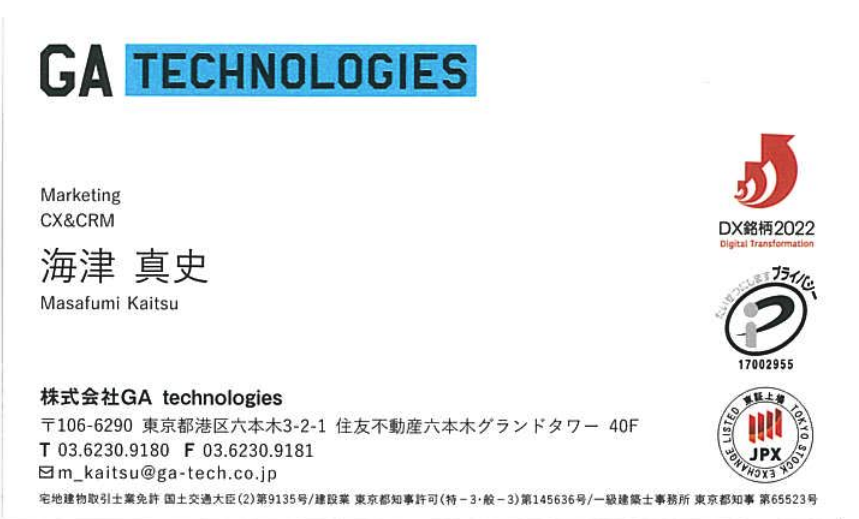
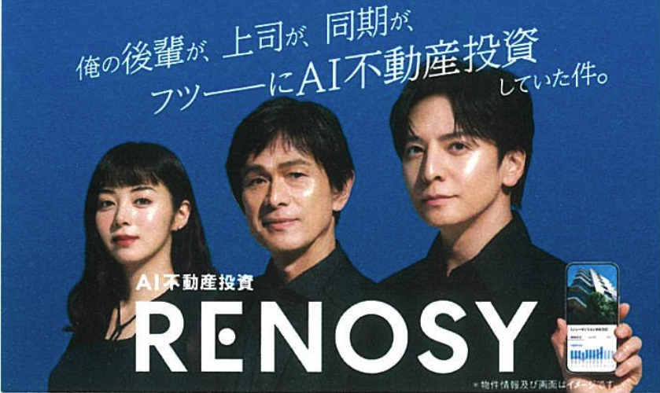
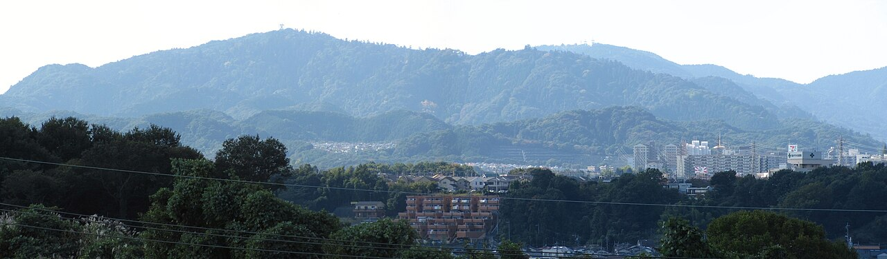
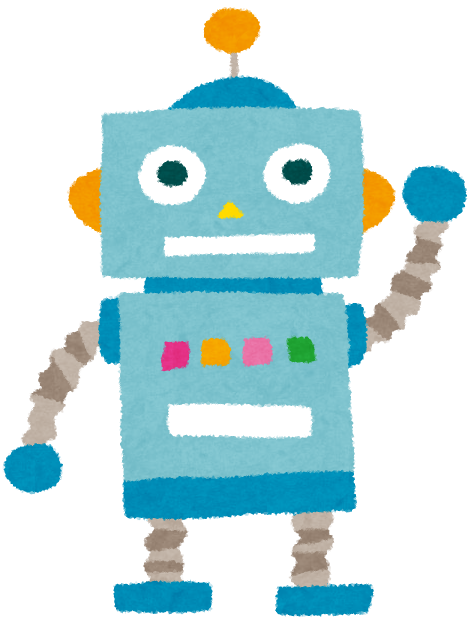

海津真史（かいつ まさふみ）
1995年10月5日生
📝 経歴
1社目: 金融業界
営業から社会人スタート
2社目: 通販会社
広告領域を担当
3社目: 女性向けインテリア雑貨の会社
EC中心にCRM領域を担当
現在: GA technologies
不動産投資サービスRENOSYを運営。「不動産での資産形成を、あたりまえにする。」を事業ビジョンに掲げるAI不動産投資サービスで、顧客体験をより良くするため日々取り組んでいます🔥
いまの仕事
不動産業界でCRM領域を担当。メールやLINEを使って、コミュニケーション設計やマーケ施策の企画・分析をしてる。
メール
LINE
施策分析


🏞️ 地元：八王子の魅力

東京都の八王子市で育ちました！自然豊かな場所で、子供の頃はザリガニ釣りや虫取りをして遊んでいました 🦐
🗻 高尾山
標高599m。八王子の代表的な山で、観光地としても有名。
🌳 自然のまわり
山や川があって、子どもの頃はザリガニ釣りや虫取りが日常だった感じの街。
🎯 趣味・特技
筋トレ
週4日くらいジムに通っています！無理なく続けられるペースで、頑張ってます。

HANA
最近ハマっている音楽グループです。結成前のオーディション番組から追いかけていて、関連番組は朝4時まで見るほど熱中しました。
ライブに行きたくて申し込み続けているのですが…今のところ全部落選中です 😭
漫画・アニメ
漫画・アニメも好きです。最近は「推しの子」がとても良かったです。

生成AI
仕事、プライベート含めて色々使うのが楽しいです。
